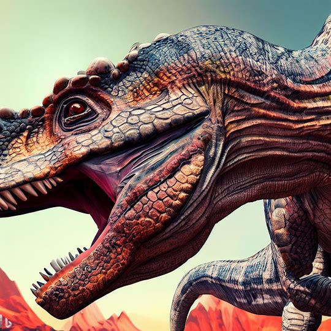
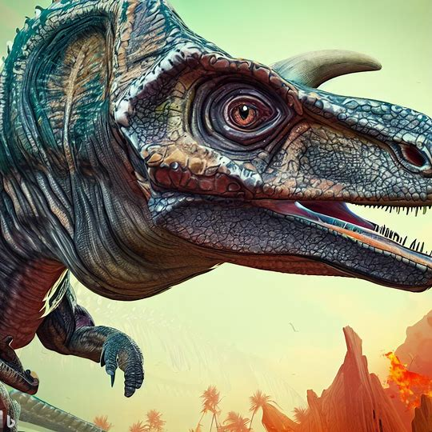

Fantasy & Beyond Museum

- Volcanosaurus
- ヴォルカノサウルス




-
ヴォルカノサウルスは、巨大な爬虫類であり、竜脚類に似た骨格構造を持っています。
- 体長は約30メートルにも及び、頭から尾まで長い首と長い尾を持っています。
- 頭部は大きく、長い口と鋭い歯を備えており、捕食する際に有利な装備です。
- 骨格は頑丈で、厚い骨で覆われており、特に頭部と四肢には堅固な装甲があります
- 背中には大きな突起が並んでおり、それらは骨からなる尖った形状をしています。これは個体間でディスプレイやコミュニケーションの一環として使われる可能性があります。
- 四肢は頑丈で力強く、地面に安定して立つことができます。
- 足の指には鋭い爪があり、獲物を捕らえるために使われます。
- ヴォルカノサウルスは、活火山地帯に生息し、溶岩流や高温の環境に適応していると考えられます。